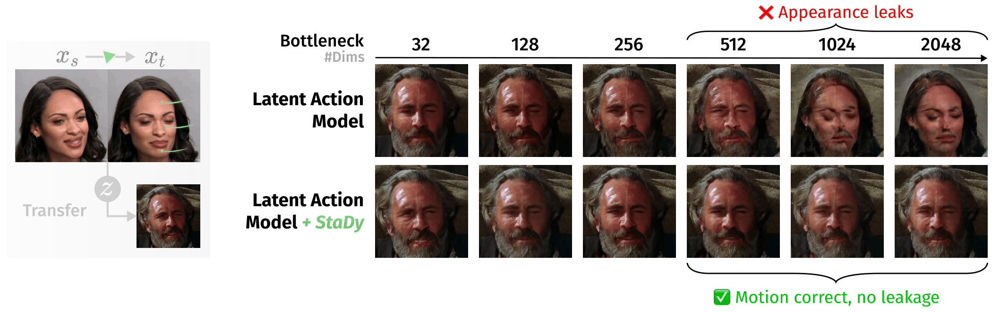
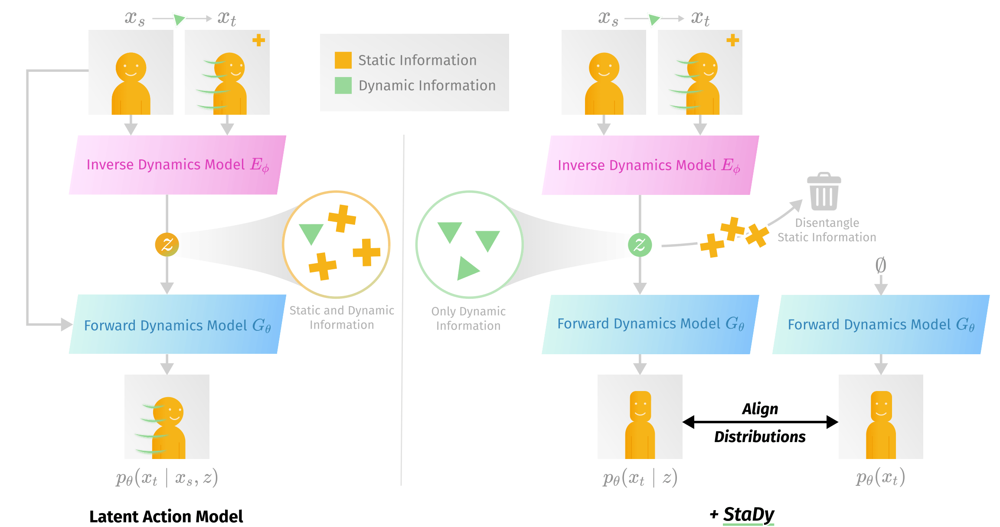

TL;DR
StaDy helps latent action models capture motion without leaking appearance. It encourages the latent code to predict the next state only when paired with the source state, discouraging it from memorizing the target. This reduces appearance leakage without restricting the latent code’s capacity.
Method
Learn how the state changes, rather than memorize what the target looks like.

| Metric | Method | 96-D | 1536-D | Δ |
|---|---|---|---|---|
| Fidelity ↑ | LAM | 0.292 | 0.369 | +26% ✅ |
| +StaDy | 0.290 | 0.360 | +24% ✅ | |
| Leakage ↓ | LAM | 0.070 | 0.085 | +21% ❌ |
| +StaDy | 0.071 | 0.072 | +1% ✅ | |
| Preservation ↑ | LAM | 0.673 | 0.579 | −14% ❌ |
| +StaDy | 0.672 | 0.681 | +1% ✅ |
Both methods gain motion fidelity with capacity, but StaDy limits leakage growth and preserves the recipient’s appearance. Δ is the relative change from 96-D to 1536-D.
| Benchmark | Method | 96-D | 1536-D |
|---|---|---|---|
| SSv2 | LAM | 17.10 | 27.05 |
| +StaDy | 19.72 | 34.95 | |
| Jester | LAM | 59.07 | 80.89 |
| +StaDy | 64.71 | 84.18 | |
| FineGym99 | LAM | 24.15 | 41.90 |
| +StaDy | 28.54 | 45.16 | |
| Diving48 | LAM | 9.21 | 9.73 |
| +StaDy | 10.69 | 18.08 |
Top-1 accuracy (%) on frozen latents. StaDy improves on LAM at both capacities across all benchmarks.
BibTeX
@misc{fundel2026stady,
title = {{StaDy}: Factorizing the World into Static and Dynamic via Likelihood Matching},
author = {Fundel, Frank and Ressler-Antal, Thomas and Ben Alaya, Malek and Baumann, Stefan Andreas and Ommer, Björn},
year = {2026}
}